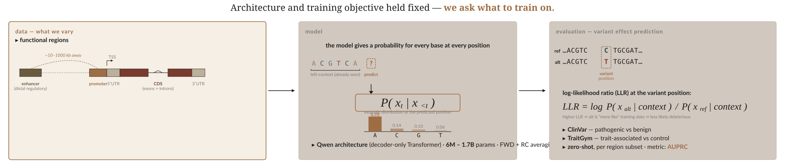
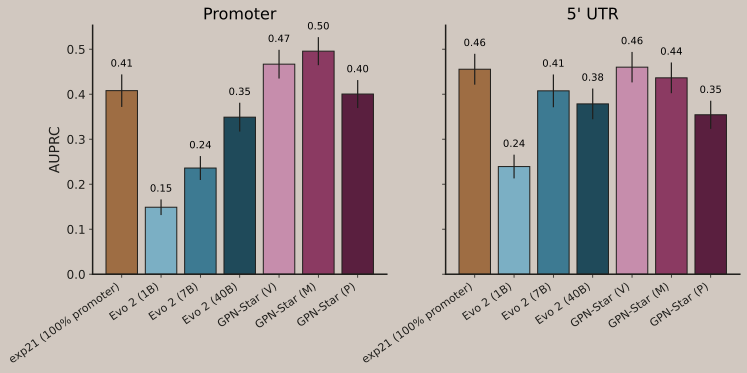
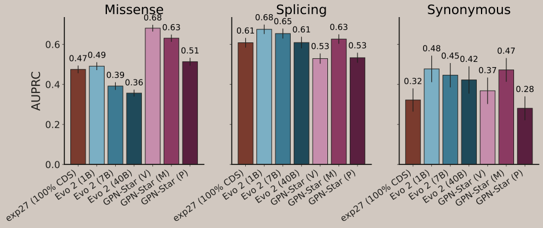
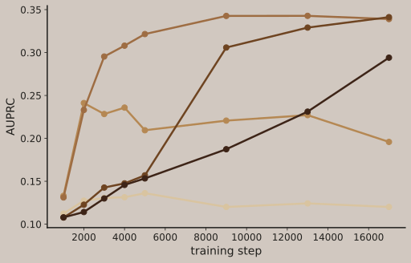
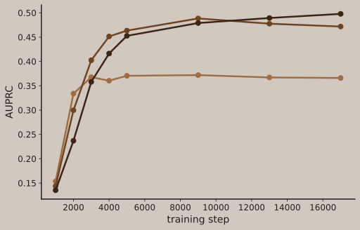

A 6M region-specific gLM beats 40B Evo 2 on promoters.
TraitGym promoter AUPRC — region-specific vs Evo 2

Balanced sampling fixes the naive-union failure on promoters.
Naive-union vs balanced sampling, per region

Promoters peak at the mammals timescale.
Promoter AUPRC vs evolutionary timescale

CDS keeps improving out to the animals timescale.
CDS AUPRC vs evolutionary timescale
